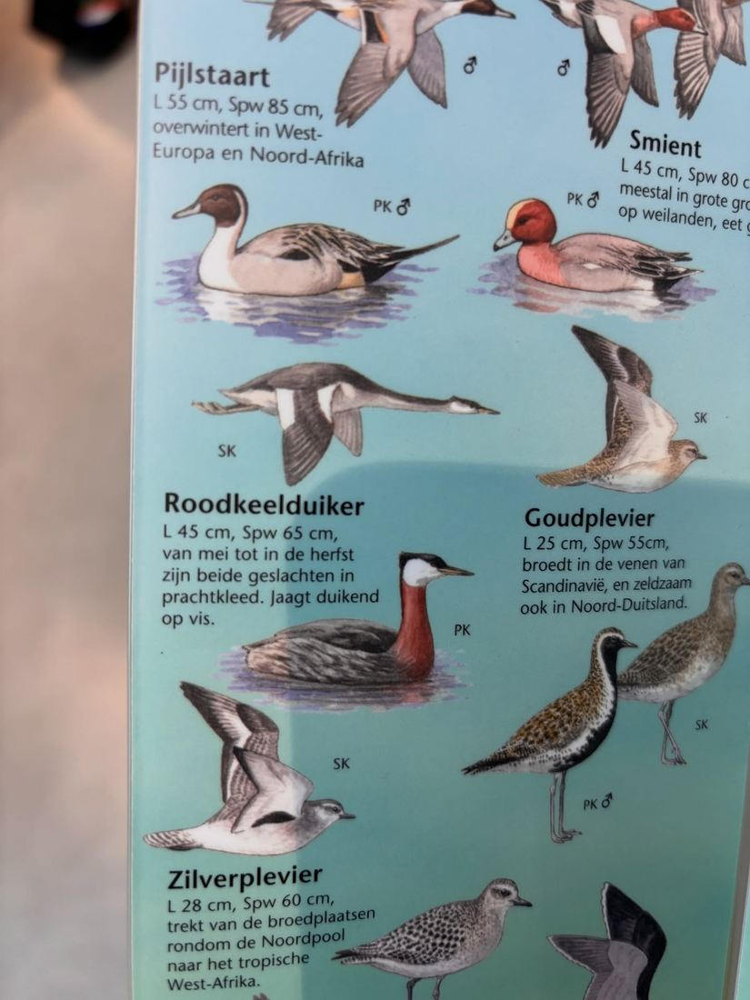
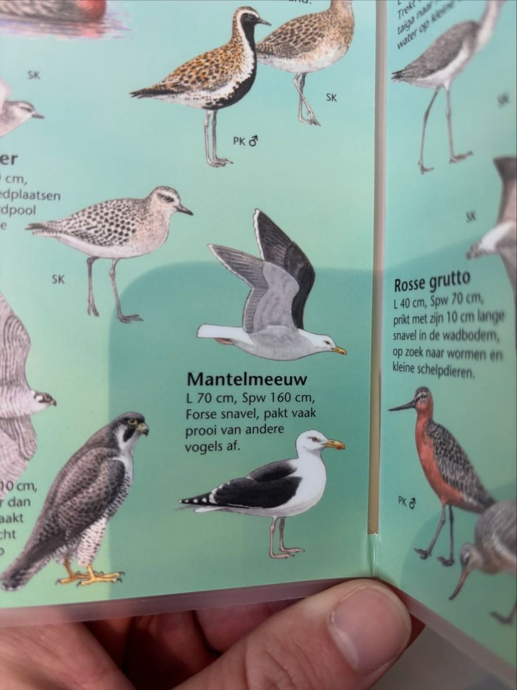
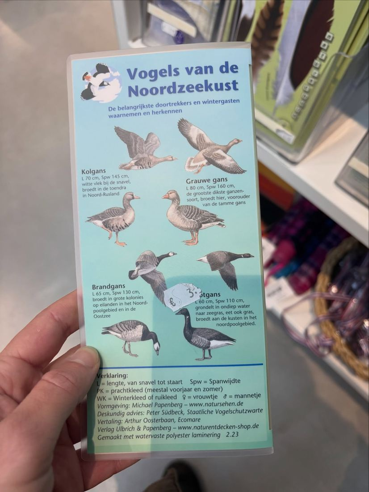

Roodhalsfuut, geen roodkeelduiker
19 november 2025 · Ecomare Texel
- Op de foto
- Roodhalsfuut
- Het ging over
- Roodkeelduiker



Vogels van de noordzeekust. Gemaakt in Duitsland, vertaald door @ecomaretexel. Had beter gekund!
Roodkeelduiker moet natuurlijk Roodhalsfuut zijn. En ‘Mantelmeeuw’ mag best ‘Grote Mantelmeeuw’ genoemd worden